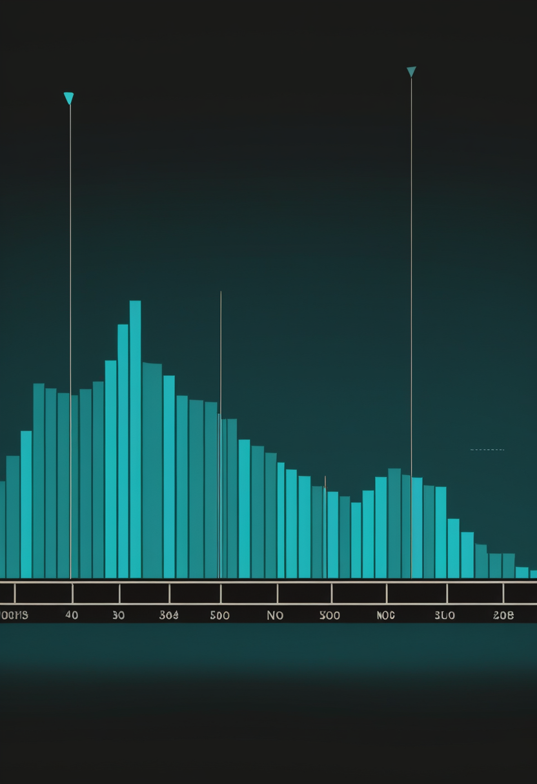
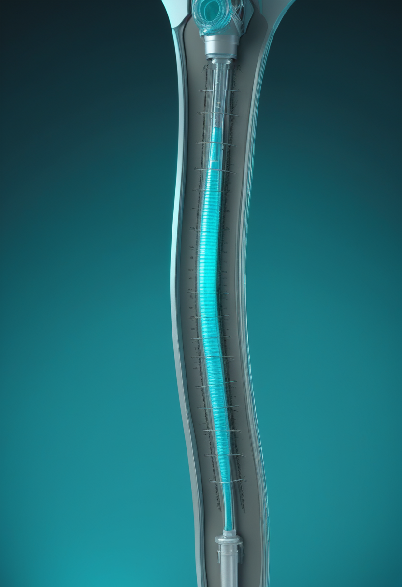
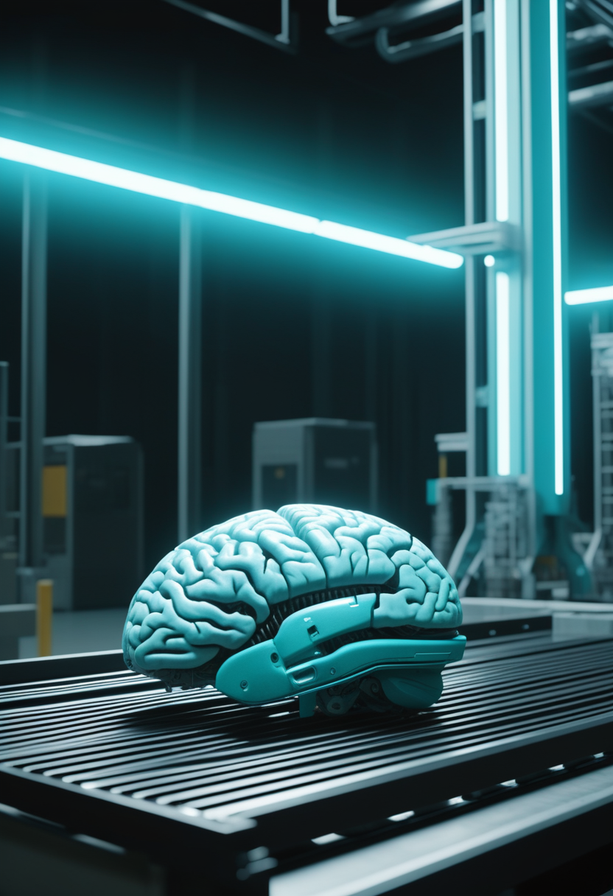
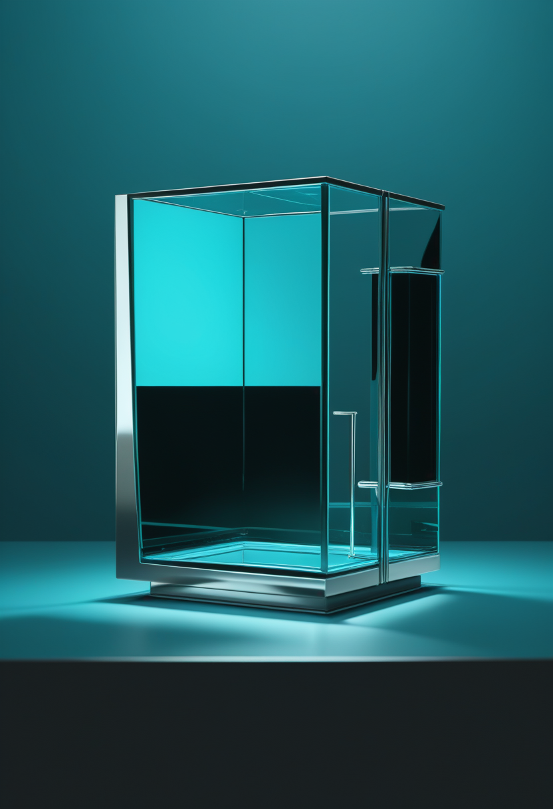
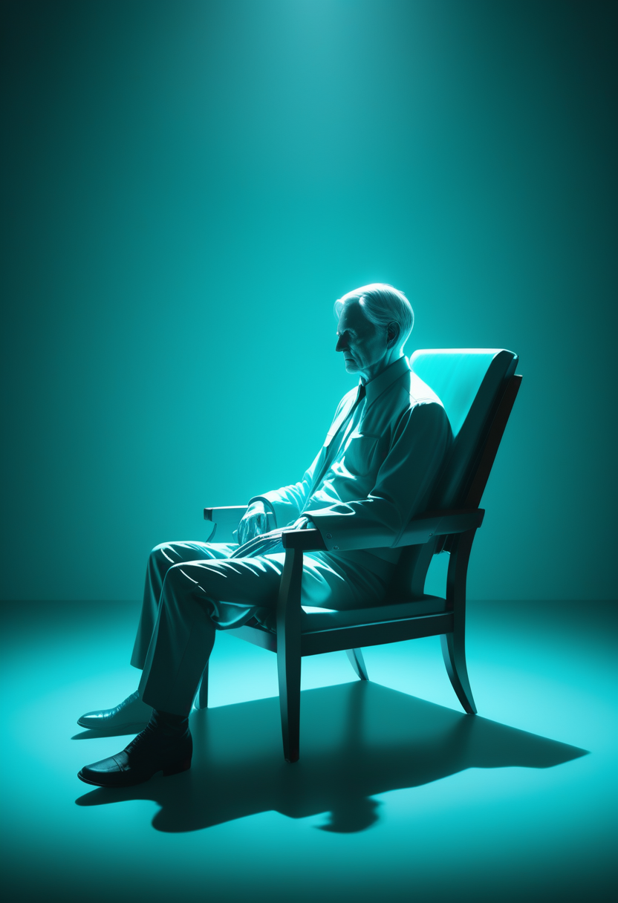
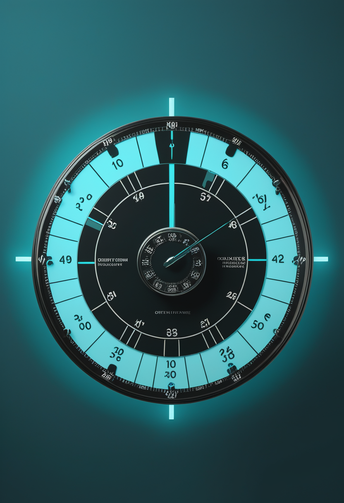

金曜日の便り。WHOのDisease Outbreak News(2026-DON617)によれば、DRCのブンディブギョ型エボラは9月7日時点で確定6,757例・死亡3,267人、致死率48.3%に達し、北キブ州カイナ保健区が新たに加わって流行は6州61保健区に広がった ― 一方でこの型に効くワクチンはまだ存在しない。命の章では、アピテグロマブがPDUFAまで残り19日となり2施設体制での審査が進むことに加え、腰椎穿刺をポートに置き換えるThecaFlex DRxの中間解析、イトビスマのEU承認と米国での実世界データ収集の始動を伝える。自由の章では、Neuralinkの国際展開が英国UCLHで7人の手術に達したこと、中国NEOの争点が承認から価格交渉へ移ったこと、視線入力の選択動作(ドウェル・まばたき)の標準化が進むことを報じる。基盤の章では、DRCエボラの最新値に加え、CDCのMMWRがこの流行を記録上2番目の規模と位置づけ5つの対応指標がいずれも未達であること、ブンディブギョ型ワクチンの試験開始がWHOにより『11月まで』とされていることを伝える。畏敬の章では、共通外層を経ずに『静かな』連星ブラックホールができる経路の説明、CRISPRでANGPTL3を切るCTX310が1年間効果を持続したこと、天問二号がカモオアレワでの試料採取段階に入ったことを紹介する。美の章では、自己進化する認知デジタルツインの新しい構成とその出力が証拠として扱われるリスク、死後アバターを悲嘆療法に組み込む提案、デジタルマインドの到来時期をめぐる専門家67人の予測という、三つの『人間のデジタル化』を取り上げる。
WHOのDisease Outbreak News(2026-DON617)によれば、DRCのブンディブギョ型エボラは9月7日時点で確定6,757例・死亡3,267人、致死率48.3%。北キブ州カイナ保健区が新たに加わり、流行は6州61保健区に広がった。一方で、この型に効くワクチンはまだ存在しない。既存のエルベボ(ザイール型向け)の交差防御を確かめる第3相試験は7月31日に実施が認められたが、WHOは9月時点で開始を『11月までに』としている。死者が3,000人を超えた流行に対し、防御手段は依然として試験の入口にいる。
Scholar Rockのアピテグロマブは、FDAのアクション日(PDUFA)である9月30日まで残り19日である。今回の生物学的製剤承認申請(BLA)にはCatalent Indianaと第2の米国内充填・仕上げ施設の2か所が含まれ、FDAはCatalent Indianaの再査察を完了している。第2施設からの商用供給は2026年第3四半期の早い時期に利用可能となる見込みで、承認されれば即座に米国発売できる体制にある。臨床側では、TOPAZまたはSAPPHIREを完了した2型・3型SMA患者を対象に、非盲検・多施設の継続試験ONYXが長期の安全性と有効性を評価している。承認の可否と、承認後に何年分のデータが積み上がるかが、並行して進んでいる。

髄腔内にヌシネルセンを送るための植込み型カテーテル・ポート『ThecaFlex DRx』について、PIERRE-IDE試験の中間解析が公表された。対象の内訳は1型16%・2型64%・3型20%。植込みは全例で成功し、追跡期間中央値230日の時点で92%にあたる23人がヌシネルセンの投与を受けた。1年に到達した10人は全員が機能する機器を維持していた。有害事象は19人に60件生じ、うち12件(20%)が重篤と判定され、多くは創部関連か呼吸器関連である。1年時点で機器への処置を要さない確率は86.2%(95%信頼区間0.73〜1.00)と推定され、創離開とアクセス困難により2件が抜去された。著者らは実行可能性を支持する結果としつつ、長期の耐久性と有効性はなお評価中とする。
オナセムノゲン・アベパルボベクの髄腔内製剤イトビスマが、2026年6月30日にEU全域で販売承認を得た。CHMPの肯定的意見は同年4月である。対象は2歳以上の小児、青年、成人の5q型SMAで、EU域内でこの幅広い患者層に承認された唯一の遺伝子補充療法となる。静注製剤が体重の上限で事実上乳幼児に限られていたことを考えると、投与経路を変えることが適応年齢そのものを広げた形である。米国側では、実世界での安全性と有効性を評価する多施設実用的研究STREAMが動き始めている。
今日のSMA欄には薬効の話が1つも出てこない。争点は工場が2か所あるか、注射をポートに置き換えられるか、投与経路を変えて適応年齢を広げられるかである。薬が効くことは前提になり、届け方の設計が患者の実際の受益を決める段階に入った。アピテグロマブの残り19日も、審査されているのは薬理ではなく供給体制である。

ユニヴァーシティ・カレッジ・ロンドン病院(UCLH)の国立神経学・脳神経外科病院で、2025年10月から12月にかけて7人がGB-PRIME試験の手術を受けた。試験はUAE、英国、カナダへ広がり、四肢麻痺者がコンピュータやロボットアームを操作するPRIMEと、重度の発話障害者から言葉を復号するVOICEの二本立てで進む。参加者数は2026年1月時点で世界21人、6月時点で26人との報道がある(後者は二次情報、要確認)。マスク氏は2025年12月31日、2026年に高量産と『ほぼ完全自動化』された手術手順へ移り、電極糸は硬膜を除去せず貫通させて留置すると述べた。手術を減らすのではなく、手術を流れ作業にするという方向である。
上海のNeuracle Technologyの侵襲型BCI『NEO』は、2026年3月13日に中国国家薬品監督管理局(NMPA)のクラスIII承認を得ている。正式名称は『植込み型ブレイン・コンピュータ・インターフェース手運動機能代償システム』で、対象は18〜60歳の頸髄損傷による四肢麻痺のうち、上腕の機能が一部残る患者に限られる。承認の先の論点は価格である。報道によれば初期価格は約80万元と見込まれ、国家医療保障局は革新的医療機器として20万元を下回る水準まで引き下げる交渉を目指すとされる(報道ベース、要確認)。承認は入口であって、実際に誰が使えるかを決めるのは償還である。
視線入力の研究が、推定精度から選択動作の設計へ重心を移している。CHI 2026の視線と音声に関するスコーピングレビューは、消費者向けのXRヘッドセットとスマートグラスが視線と音声の双方を扱えるようになった現状を整理し、意図を示して誤反応を減らす方法として一定時間の注視(ドウェル)が最も広く使われていると報告した。同じ会議の『The People's Gaze』は、利用者と専門家の共同設計により、ドウェルとまばたきが機能性・信頼性・意図性を高める修飾動作として普遍的に提案されたと述べる。ETRA 2026では、まばたき・ウインク・ドウェルを同一条件で比較する標準化研究が発表された。比べられる形にすることが、次の改良の前提になる。
3本が示すのは、BCIと視線入力が同時に『実装後』の問題へ移ったことである。Neuralinkは手術を工程化し、中国のNEOは価格交渉に入り、視線入力は選択動作を比較可能にした。どれも新しい能力の話ではなく、既にある能力を誰にどう届けるかの話である。技術の限界より、供給と償還と操作設計が成否を決める段階に来ている。
WHOのDisease Outbreak News 2026-DON617によれば、9月7日時点でDRCは確定6,757例・死亡3,267人を報告した。致死率は48.3%である。国外を含む累計は6,778例(DRC 6,757例、ウガンダ20例、フランス1例)・死亡3,269人で、回復は少なくとも1,611人。8月28日の前回DON以降、北キブ州カイナ保健区が新たに加わり、影響を受けた保健区は26州のうち6州61保健区となった。州別ではイトゥリ州5,365例・2,426人、北キブ州1,039例・681人(致死率約65.5%)である。
CDCのMMWRが9月1日に早期公開した現地報告は、この流行を記録上2番目に大きいエボラ流行と位置づけた(集計は8月21日時点、確定5,458例・死亡2,606人=48%で、本紙が既報の直近値より古い基準日である)。約100日で約5,000例という増勢は前例がない。影響を受けたのは26州のうち6州で、その州内151保健区のうち57保健区に及び、イトゥリ州だけで報告例の84%を占める。報告が名指しするのは数字ではなく体制のほうである。警戒通報による探知、接触者追跡、検査、隔離、安全で尊厳ある埋葬という5つの対応指標は、いずれも目標に達していない。
現在使えるエルベボはザイール型向けであり、ブンディブギョ型に対する有効性は確立していない。WHOの専門家諮問群は7月31日、動物とヒトでの知見の蓄積を受けて交差防御を確かめる第3相試験の実施を認め、DRCは8月28日に第一線の医療従事者への接種を開始した。7万回分が承認され5万回分超が到着、うち2万回分が試験用に確保されている。ただしWHOは9月時点で試験開始を『11月までに』としており、流行が始まった5月14日から数えて半年が経つ。ブンディブギョ型そのものを標的とする新規ワクチン2種、モデルナのmRNA製剤とオックスフォード大の製剤は、英国とカナダで安全性試験の段階にある。
3本を重ねると、この流行の本質が数字ではなく時間であることが見える。累計は毎日数十ずつ積み上がり、保健区は増え、致死率は48%で動かない。対して、探知も追跡も埋葬も目標未達のまま、唯一の交差防御候補の試験は11月まで始まらない。感染症対策では、正しい手段を持っているかどうかより、それが間に合う時刻に届くかどうかが結果を決める。
ガイアが見つけた『静かな(X線・電波で暗い)』ブラックホール連星の作られ方に、説明の候補が出た。ガイアBH1とBH2はいずれも太陽の約9倍の質量で、公転周期はそれぞれ185日と1,277日。BH3は約33倍、周期は約4,000日、離心率約0.72、伴星は0.76太陽質量の非常に金属欠乏した巨星である。質量差が極端な連星は不安定な質量移動から共通外層期に入り、合体するか大幅に軌道が縮むと予想されてきたため、これらの広い軌道は標準的な進化模型と合わない。マックス・プランク宇宙物理学研究所の恒星進化計算は別経路を示す。膨張した星の外層がロッシュ・ローブを越えたとき、潮汐力で物質が伴星に捕えられる安定した質量移動である。

CRISPR-Cas9で肝臓のANGPTL3遺伝子を働かなくするCTX310の第1相追跡が1年に達した。欧州心臓病学会(ESC)2026で発表され、NEJMに『Durability of CRISPR-Cas9 Gene Editing Targeting ANGPTL3 with CTX310』として掲載された。最高用量0.8 mg/kgでの平均低下率は、ANGPTL3が79%(最大89%)、中性脂肪が48%(最大78%)、LDLコレステロールが53%(最大84%)で、いずれも1年を通じて維持された。治療関連の重篤有害事象はなく、グレード3以上の肝逸脱酵素上昇も報告されていない。既存薬で下がらない脂質異常に対し、1回の点滴で1年という持続が示された点が、この報告の中身である。
中国の天問二号は、地球の準衛星カモオアレワでの採取段階に入っている。2025年5月28日打ち上げ、2026年7月上旬に約20 kmの距離から初画像を取得した。採取目標は20〜100ミリグラム。探査機はホバリング採取、タッチアンドゴー、係留固定の3方式を備えており、表面の力学的性質が事前の想定と違っていても試料を得られる設計である。小天体は重力が極端に小さく、表層が砂か岩か固結物かを着く前に確定できないため、方法を1つに絞らないこと自体が保険になる。地球への試料帰還は2027年4月、その後2035年1月にメインベルト彗星311P/PanSTARRSへ向かう。
3本はいずれも『予想と違ったときにどうするか』の話である。ガイアの連星は標準模型に合わず、別経路の計算が要った。CTX310は効くかどうかではなく1年もつかが論点だった。天問二号は表面が分からないから採取方法を3つ積んだ。分からなさを前提に設計を組めるかどうかが、結果の質を決めている。
認知デジタルツイン(CDT)をめぐって、工学と倫理が逆向きに進んでいる。2026年9月の査読前論文は、物理層・デジタルツイン層・認知層・タスク層からなる四層構成を提案し、物理状態の同期にとどまらず、知識・記憶・注意によってタスク別の認知モデルを構築して自己進化する閉ループを描く。一方、本紙が9/9号で扱った6月の査読前論文は、CDTを『行動・文脈・生理データから更新される特定個人の認知の動的な計算表現』と定義したうえで、その倫理的な重みは出力の使われ方にあると指摘する。利用者、臨床家、雇用主、プラットフォーム、政府が、その出力を本人が何を考え、何を望み、何をするかの証拠として扱いうるからである。片方は精度を上げ、もう片方は誰が読むのかを問う。

コペンハーゲン大学のHatherleyらの査読前論文が、故人を模した死後アバター(PMA)を悲嘆療法に組み込む可能性を検討した。提案は2つある。空椅子法のような既存の想像的技法へPMAを組み込む使い方と、PMAを作る過程そのものを芸術療法とみなす使い方である。土台に置かれるのは悲嘆の二重過程モデル、継続する絆の理論、そしてフィクショナリズムという哲学的枠組み。著者らは5つの倫理的反論を検討し、臨床という文脈がリスクを緩和する以上、いずれも決定的な反論にはならないと論じる。ただし2026年4月には、デッドボットが病的悲嘆を助長し死の受け止め方を変えうるという警告も出ており、著者ら自身、実証研究なしには利点も危険も評価できないと締める。

デジタルマインド(主観的経験を持ちうる計算機システム)の見通しについて、67人の専門家を対象とする調査結果が公表されている。回答者はデジタルマインド研究、AI研究、哲学、予測などの分野から集められた。原理的に可能とする確率の中央値は90%、今世紀中(2100年まで)の実現は65%、2030年までの出現は20%。最初のデジタルマインドが生まれてから10年で、その集合的な福祉容量が数十億人規模に達しうるという見立てが多い。一方で、その福祉が正になるか負になるかについては、合意に近いものすら存在しない。いつ来るかより、来たときに良いことなのかで意見が割れている。
3本に共通するのは、誰が読み、誰が使うかという問いである。認知ツインは出力が本人の証拠として扱われ、死後アバターは臨床という文脈があってはじめて許容され、デジタルマインドは実現時期より福祉の正負で意見が割れる。『作れるか』の議論はすでに一段落し、いまの争点は『作ったものをどの制度が受け取るか』に移っている。
金曜日の便り。WHOのDisease Outbreak News(2026-DON617)によれば、DRCのブンディブギョ型エボラは9月7日時点で確定6,757例・死亡3,267人、致死率48.3%に達し、北キブ州カイナ保健区が新たに加わって流行は6州61保健区に広がった ― 一方でこの型に効くワクチンはまだ存在しない。命の章では、アピテグロマブがPDUFAまで残り19日となり2施設体制での審査が進むことに加え、腰椎穿刺をポートに置き換えるThecaFlex DRxの中間解析、イトビスマのEU承認と米国での実世界データ収集の始動を伝えた。自由の章では、Neuralinkの国際展開が英国UCLHで7人の手術に達したこと、中国NEOの争点が承認から価格交渉へ移ったこと、視線入力の選択動作(ドウェル・まばたき)の標準化が進むことを報じた。基盤の章では、DRCエボラの最新値に加え、CDCのMMWRがこの流行を記録上2番目の規模と位置づけ5つの対応指標がいずれも未達であること、ブンディブギョ型ワクチンの試験開始がWHOにより『11月まで』とされていることを伝えた。畏敬の章では、共通外層を経ずに『静かな』連星ブラックホールができる経路の説明、CRISPRでANGPTL3を切るCTX310が1年間効果を持続したこと、天問二号がカモオアレワでの試料採取段階に入ったことを紹介した。美の章では、自己進化する認知デジタルツインの新しい構成とその出力が証拠として扱われるリスク、死後アバターを悲嘆療法に組み込む提案、デジタルマインドの到来時期をめぐる専門家67人の予測という、三つの『人間のデジタル化』を取り上げた。
では、また明日の朝に。 — JaH